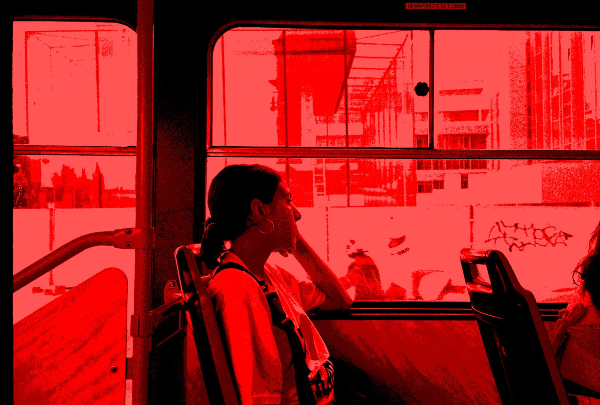
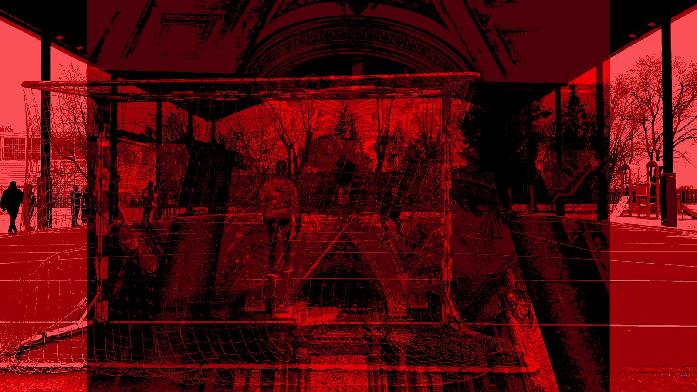
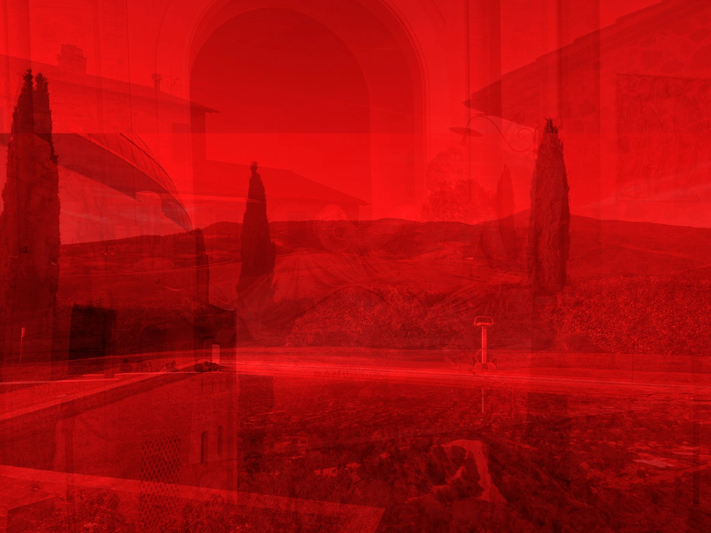

Restos de
permanencia
Abril Zahínos Bertomeu
Fotografía digital intervenida · 2026

El proyecto
Mi proyecto Restos de permanencia nace de una investigación sobre la memoria corporal y la relación entre el cuerpo, la mente y el entorno. Me interesa explorar cómo las experiencias que vivimos dejan huellas en nosotros, incluso cuando no somos capaces de recordarlas, comprenderlas o expresarlas de manera consciente.
Parto de la idea de que nuestra identidad no se construye únicamente a través de los recuerdos que podemos narrar, sino también mediante sensaciones, emociones y fragmentos de experiencias que permanecen en nuestro cuerpo y condicionan nuestra manera de percibir el mundo.
A través de la fotografía intervenida digitalmente y la pintura, trabajo con la superposición de imágenes, la fragmentación y el color rojo como recursos para representar esa memoria emocional. Los espacios cotidianos, los paisajes y las figuras humanas se mezclan hasta generar imágenes ambiguas, donde lo real y lo recordado parecen confundirse.
Durante mi estancia en Can Serrat, me gustaría continuar desarrollando esta investigación, explorando especialmente la relación entre la memoria y los espacios que habitamos. Me interesa observar cómo un entorno desconocido puede despertar sensaciones familiares y cómo nuestras experiencias anteriores influyen en la manera de percibirlo.
Mi intención no es llegar a una obra definitiva, sino aprovechar la residencia como un espacio de experimentación, donde la pintura y la fotografía me permitan cuestionar cómo los lugares permanecen en nosotros y cómo nosotros también dejamos parte de nuestra identidad en ellos.
Obras
Nueve piezas · 2026
-
 01
01En donde se saben las cosas
2026 · 10 × 15 cm
-
 02
02Reflejos que sanan
2026 · 10 × 15 cm
-

03Rozando
2026 · 8 × 15 cm
-
 04
04A trozos
2026 · 8 × 15 cm
-
 05
05Desde arriba todo permanece
2026 · 10 × 15 cm
-
06
Mirar mientras pasa
2026 · 10 × 15 cm
-
 07
07Adherente
2026 · 11 × 15 cm
-

08Me insiste
2026 · 11 × 15 cm
-
 09
09Me atraviesa
2026 · 11 × 15 cm
Contacto
- Correoabrilzahinos9@gmail.com
- Instagram@abril.zahinos_arte